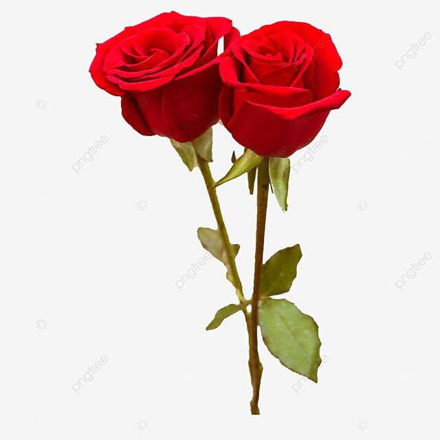

The true lilies are erect perennial plants with leafy stems, scaly bulbs, usually narrow leaves, and solitary or clustered flowers. The flowers consist of six petal-like segments, which may form the shape of a trumpet, with a more or less elongated tube, as in the Madonna lily (Lilium candidum) and Easter lily
In most parts of the world, jasmine is very symbolic. In the Philippines, jasmine is often featured in weddings and religious ceremonies. In Thailand, the flower represents motherhood, love, and respect. This precious bloom is also the national flower of Pakistan!
A rose is a flowering shrub belonging to the Rosaceae family, known for its beautiful, often fragrant flowers that can vary in color from white to pink, red, orange, and yellow, and are typically accompanied by prickly stems; roses are widely cultivated for their beauty and often symbolize love and romance, with different colors carrying specific meanings; the word "rose" originates from the Latin word "rosa".

"The thorns of a rose remind us that love can be painful, but the beauty is worth it".
"Love is like a rose; its beauty is divine, its fragrance is sweet, and its promise is forever".